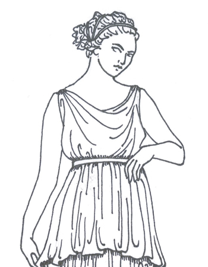
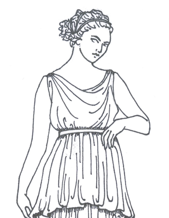
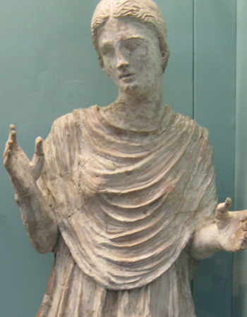
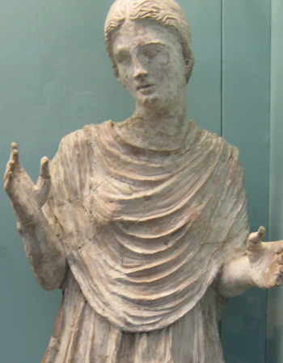

 

What are Orantes?
Orantes are funerary statues—always of women—that were made exclusively in the South
Italian town of Canosa during the fourth and third centuries BCE. The name of these statues
is derived from the latin verb orare, which means to pray. The majority of orantes adopt
the universal gesture of prayer with the arms lifted, the elbows near the sides of the body,
and the hands outstretched. Their head is often tilted and their facial expression is
pensive, and filled with sadness and reflection.
They are hollow statues made of terracotta. Unusually large for terracotta figures
of this period these statues range in height from 64 cm – 109 cm and they were originally
painted in bright colors. The original colors of the orantes unfortunately have not survived,
although with some exceptions.
Orantes wear the typical dress that women wore in the ancient Greek world over 2,000 years ago. All three orantes in this exhibition wear a long sleeveless dress that reaches down to their ankles called a chiton. Real chitons were made of light-weight linen cut longer than the shoulder-to-floor measurement of the woman wearing it. The excess length was pulled up (far left drawing) and tied at the waist with a girdle that was covered by the overfall of fabric known as the apoptygma (near left drawing). A second belt was then tied below the breasts. The orantes’ feet—wearing sandals or shoes—protrude from underneath the chiton.
While all orantes are depicted wearing a chiton, some are also shown wearing a cloak over the chiton. Cloaks like the ones shown here, are called himations and were heavier and often made of wool. Himations were worn by women in the winter to protect them from the cold.
The hair of the orantes provides further insight into the styles from this period of Antiquity. Their wavy hair is parted in the middle and pulled back over the ears. On some orantes the hair divides into two or more locks that rest on the shoulders and chest. On others the hair is pulled back in a ponytail or a braid.
Another commonality among orantes is their unique stance that in the visual arts is called contrapposto, an Italian term that means counterpose. In this stance, most of the figure’s weight is shown resting on one foot. While the leg that holds most of the weight is straight, the other one is slightly bent at the knee, which in the case of the orantes, results in a dynamic pattern of folds emanating from the left knee. As an alternative to the static frontal stance of earlier sculpture, contrapposto was an art historical phenomenon that the Greeks invented in the early fifth century. Representing the human figure in contraposto was still considered innovative at the time the orantes were made.